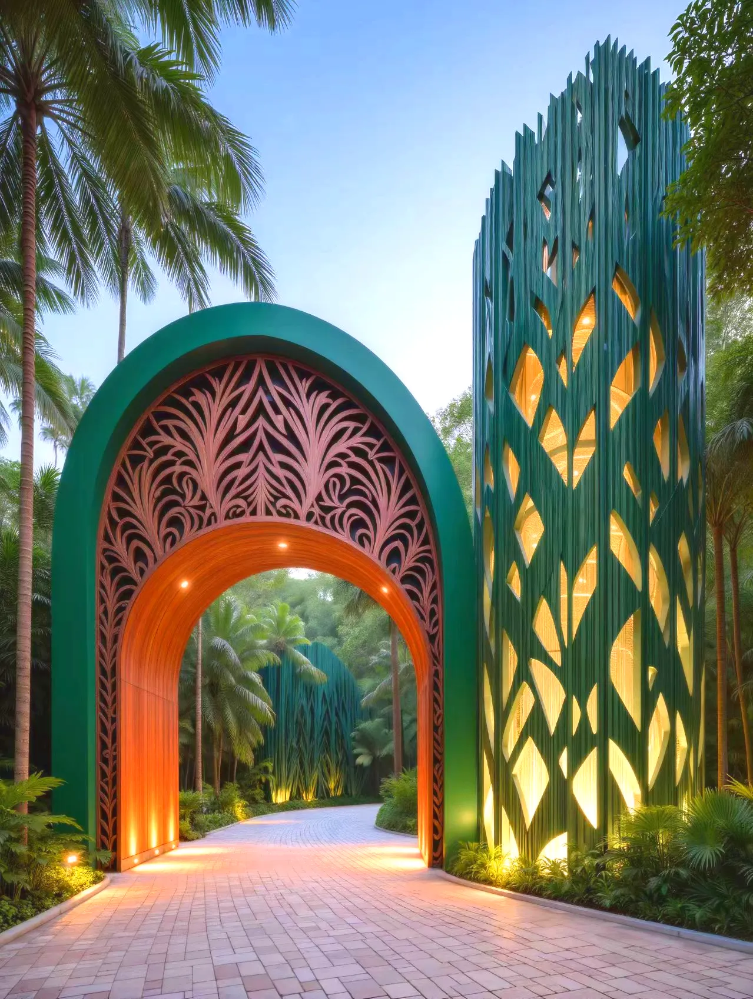
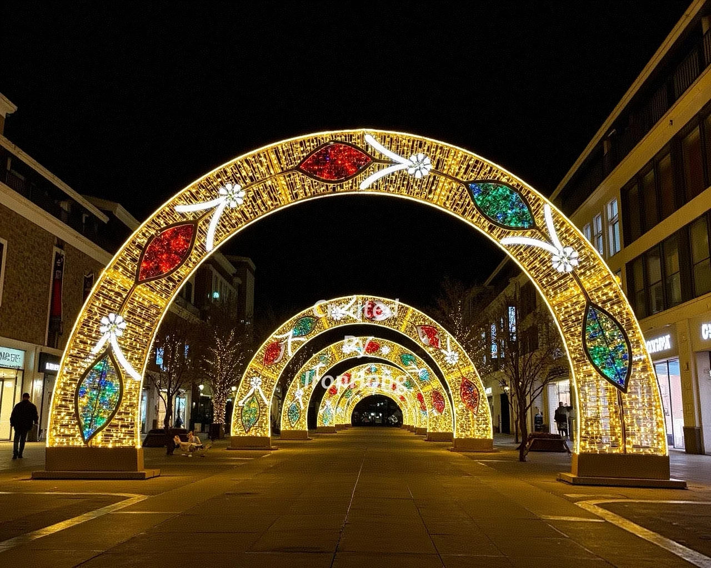

01艺术装置
适合景区入口、商业广场、古镇街巷、酒店门厅、节庆活动和网红打卡点。重点是远景识别、拍照构图、结构安全、防水检修和后期换主题。
- 发光门头、主题雕塑、互动拍照点
- IP65 户外灯具、隐藏检修、分区控制
- 可按节庆和运营节点更新内容
每个板块都能独立成页，也能组合成一个完整文旅夜间项目。以下范围最终以现场资料、合作边界和书面报价为准。

01适合景区入口、商业广场、古镇街巷、酒店门厅、节庆活动和网红打卡点。重点是远景识别、拍照构图、结构安全、防水检修和后期换主题。
 02
02
适合驻场演艺、发布活动、商业演出、节庆舞台和文旅夜游主秀。重点是舞台结构、灯光节目、演员动线、装拆效率和演出安全。
 03
03
适合景区宴会厅、古城夜宴、酒店宴会、文旅街区和主题餐饮。重点是宴席节奏、剧情场景、灯光舞美、演员出入和游客二次传播。

04适合老街区、滨水岸线、公园广场、商业外摆和建筑立面。重点是夜间安全、导流、低眩光、居民影响、长期电费和分期建设。
现场照片、平面尺寸、供电位置、开放时间、目标客流、预算上限和开放日期。
明确节点数量、游客视线、主题方向、材料与控制思路，并标注尚需复核的条件。
根据责任边界拆分结构、设备、控制、运输、安装、调试和维护，避免只报一个失真的总价。
以确认图纸、设备清单、现场条件和书面节点计划为准推进，重大变更重新确认。